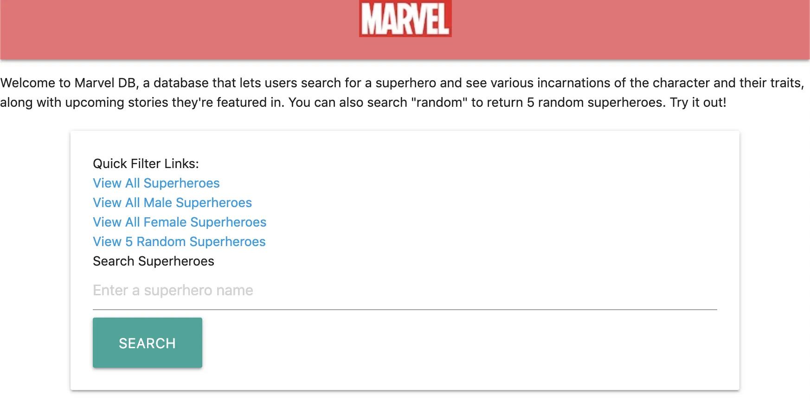

Python & Java Projects
Various Programming Classes
While I would never consider myself a full-fledged programmer, I've been lucky enough to dabble in various programming languages over the years. While studying at UMSI, I had the privilege of taking more advanced coding classes, including Intermediate Programming, where I became more comfortable working in Python. Throughout the semester, I learned how to scrub data from the internet, read and write to SQL databases, access various web APIs, and create web applications using third party libraries like FLASK. I even wrote my first unit tests.
In my Mobile Innovation Development class, I took my programming skills a step further and learned how to program Java and Android Studio, where I lead a group project where we designed, developed, and deployed an Android application inspired by my previous final project in SI 582, Lil Library. I even learned how to read and write data to the cloud using Google Firebase.
Python Final Project Overview
My final project consisted of a FLASK web app that lets users view information related to comic book heroes from Marvel's web API. For this project, I learned how to scrub the API's CSV file and write it to a SQL database every time the user made a query. The CSV contained data about Marvel superheroes, including their biography information, number of appearances, and upcoming stories they're featured in. Users can search for a specific hero, view all of them, or get a random hero using the flask routes outlined below.
To see my entire project and run it yourself, feel free to download it from the project's Github page.

Android Studio/Java Final Project Overview
For my final project, I continued my initial concept from my Interaction Design class and lead a team of five students in developing a Little Library app using Java in Android Studio.
Little Library's features included a Google Maps-based view of the user's area and the surrounding libraries, including important information related to each specific little library around them. Since our app was integrated with Google Maps API, we were even able to provide turn-by-turn directions. Users could update a library's information in real-time using Google Firebase behind the scenes.
{kind=link}
{kind=link}
{kind=link}
{kind=link}
Demo Video
To see my entire project and run it yourself, feel free to download it from the project's Github page.